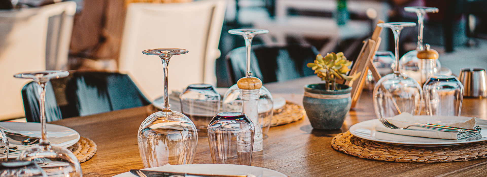
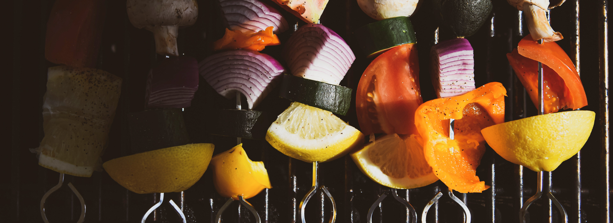

Indulge in a world of culinary excellence at Shangri-La Colombo, where fine dining transcends expectations. Our award-winning restaurants offer an opulent gastronomic journey, combining global flavors with local flair. Savor meticulously crafted dishes in an elegant ambiance that mirrors the luxury of our surroundings. With an extensive wine selection and impeccable service, each dining experience is a masterpiece, ensuring that every meal at Shangri-La Colombo is a moment to remember.
For aficionados of the grill, Shangri-La Colombo presents an unforgettable experience. Our open-air grilling terrace, overlooking the stunning Indian Ocean, sets the stage for a tantalizing adventure of flavors. Succulent meats and fresh seafood are expertly prepared, infused with tantalizing marinades and grilled to perfection. The sensory delight of smoky aromas and sizzling dishes creates a unique culinary journey. Join us at our grill and savor the essence of outdoor dining at its finest.
